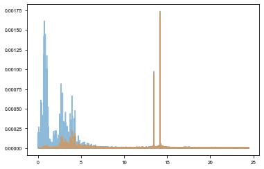

KIC 6780873¶
[24]:
%run setup.py
[2]:
t, y = np.loadtxt('../data/6780873_lc.txt', usecols=(0,1)).T
[3]:
time, flux = t, (y-1)*1e3
freq = np.array([14.18764198, 13.43633836])
weights = np.array([1.73064022, 0.97161184])
plt.plot(time, flux)
[3]:
[<matplotlib.lines.Line2D at 0x104a76320>]

[4]:
period_guess, a_guess = 9.159, 18
Periodogram¶
[29]:
pg = ms.period_search()
[30]:
periods = np.linspace(2, 20, 200)
results = pg.fit(periods)
100%|██████████| 200/200 [06:04<00:00, 1.82s/it]
100%|██████████| 200/200 [05:39<00:00, 1.70s/it]
[31]:
ys = np.array([[r[0] for r in row] for row in results])
sm = np.sum(ys, axis=0)
period_ind = np.argmax(sm)
plt.plot(periods, -sm);

[23]:
def get_phase(nu, t, y):
arg = 2*np.pi*nu[None, :]*t[:, None]
D = np.concatenate((np.sin(arg), np.cos(arg),
np.ones((len(t), 1))), axis=1)
DT = D.T
DTD = np.dot(DT, D)
w = np.linalg.solve(DTD, np.dot(D.T, y))
return np.arctan2(w[:len(nu)], w[len(nu):2*len(nu)]) / (2*np.pi*nu)
[36]:
import tqdm
t0s = np.arange(time.min(), time.max(), 2.5)
phases = np.empty((len(t0s)-1, len(freq)))
phases[:] = np.nan
for i, t0 in tqdm.tqdm(enumerate(t0s[:-1]), total=len(t0s)-1):
m = (t0 <= time) & (time < t0s[i+1])
if m.sum() < 100:
continue
phases[i] = get_phase(freq, time[m], flux[m])
# phases -= np.nanmean(phases, axis=0)
full = np.mean(phases, axis=1)
100%|██████████| 583/583 [00:00<00:00, 2957.31it/s]
[37]:
m = np.isfinite(phases[:, 0])
res = xo.estimators.lomb_scargle_estimator(t0s[:-1][m], full[m], min_period=7, max_period=25)
f, p = res["periodogram"]
period_guess = res['peaks'][0]['period']
plt.plot(1 / f, p)
plt.axvline(res["peaks"][0]["period"], color="k")
plt.xlabel("period")
plt.ylabel("power")
[37]:
Text(0, 0.5, 'power')
[45]:
uHz_conv = 1e-6 * 24 * 60 * 60
tds = []
for freq, phase in zip(ms.freq, phases[m].T):
phase = np.unwrap(phase)
phase -= np.mean(phase)
td = phase / (2*np.pi*(freq / uHz_conv * 1e-6))
tds.append(td)
[38]:
##### period_guess = res["peaks"][0]["period"]
arg = 2*np.pi*t0s[:-1][m]/period_guess
D = np.concatenate((np.sin(arg)[:, None],
np.cos(arg)[:, None],
np.ones((len(phases[m]), 1))), axis=-1)
w = np.linalg.solve(np.dot(D.T, D), np.dot(D.T, phases[m, 0]))
a_guess = np.sqrt(np.sum(w[:2]**2)) * 86400
period_guess, a_guess
[38]:
(9.160772403859214, 15.229837526132492)
Subdividing¶
[31]:
from scipy.ndimage import gaussian_filter
from maelstrom.utils import amplitude_spectrum
y_low = gaussian_filter(y,1.8)
y_high = y - y_low
plt.plot(*amplitude_spectrum(t, y), alpha=0.5)
plt.plot(*amplitude_spectrum(t, y_high), alpha=0.5)
WARNING: AstropyDeprecationWarning: Importing LombScargle from astropy.stats has been deprecated and will no longer be supported in future. Please import this class from the astropy.timeseries module instead [astropy.stats.lombscargle]
[31]:
[<matplotlib.lines.Line2D at 0x1c4eebde80>]

[32]:
from maelstrom import Maelstrom
ms = Maelstrom(t, y_high, freq=freq)
ms.first_look()
[32]:
array([<matplotlib.axes._subplots.AxesSubplot object at 0x1c4f400b00>,
<matplotlib.axes._subplots.AxesSubplot object at 0x1c4e9ffba8>,
<matplotlib.axes._subplots.AxesSubplot object at 0x1c4f0d4128>,
<matplotlib.axes._subplots.AxesSubplot object at 0x1c4ef70588>],
dtype=object)

[33]:
td_time, td_td = ms.get_time_delay(segment_size=2.8)
td_td = np.average(td_td, weights=ms.get_weights(norm=False), axis=1)
[34]:
# td_time, td_td = np.loadtxt('../data/kic6780873_time-delay_Q99_llc.txt', delimiter=',', usecols=(0,1)).T
# td_time += 2400000
# td_time -= 2454833
#td_time -= np.median(td_time)
td_time = td_time[td_td< 70]
td_td = td_td[td_td < 70]
td_time = td_time[td_td>- 70]
td_td = td_td[td_td>-70]
# td_time -= np.median(td_time)
plt.plot(td_time, td_td)
[34]:
[<matplotlib.lines.Line2D at 0x1c4f131748>]

[35]:
from maelstrom.utils import amplitude_spectrum
plt.plot(*amplitude_spectrum(td_time, td_td))
[35]:
[<matplotlib.lines.Line2D at 0x1c4ee3d3c8>]

[23]:
import theano.tensor as tt
with pm.Model() as subdivide_model:
logP = pm.Normal("logP", mu=np.log(period_guess), sd=0.5, testval=np.log(period_guess))
period = pm.Deterministic("period", pm.math.exp(logP))
# The time of conjunction
logs_lc = pm.Normal('logs_lc', mu=np.log(np.std(flux)), sd=10, testval=0.)
logasini = pm.Normal('logasini', mu=np.log(a_guess), sd=10, testval=np.log(a_guess))
asini = pm.Deterministic("asini", tt.exp(logasini))
drift = pm.Normal('drift', mu=0., sd=0.1, testval=0)
# Periastron sampled from uniform angle
omega = xo.distributions.Angle("omega", testval=0.)
phi = xo.distributions.Angle("phi", testval=0.22)
# sinomega = pm.Uniform('sinomega', lower=-1, upper=1)
# sinphi = pm.Uniform("sinphi", lower=-1, upper=1)
# omega = pm.Uniform("omega", lower=-2*np.pi, upper=2*np.pi)
mean = pm.Normal('mean', mu=0, sd=5, testval=0.)
# Eccentricity
eccen = pm.Uniform("eccen", lower=0, upper=0.9, testval=0.05)
# BoundedBeta = pm.Bound(pm.Beta, lower=0, upper=1-1e-5)
# eccen = BoundedBeta("eccen", alpha=0.867, beta=3.03, shape=1,
# testval=0.05)
# The baseline flux
#mean = pm.Normal("mean", mu=0.0, sd=10.0, testval=0.003)
# Mean anom
M = 2.0 * np.pi * td_time / period - phi
# True anom
kepler_op = xo.theano_ops.kepler.KeplerOp()
sinf, cosf = kepler_op(M, eccen + np.zeros(len(td_time)))
factor = 1.0 - tt.square(eccen)
factor /= 1.0 + eccen * cosf
psi = factor * (sinf*tt.cos(omega)+cosf*tt.sin(omega))
tau = asini * psi
tau += td_time * drift
taumodel = pm.Deterministic('taumodel', tau - mean)
pm.Normal('obs', mu=taumodel, sd=tt.exp(logs_lc), observed=td_td)
plt.plot(td_time, xo.eval_in_model(taumodel))
plt.plot(td_time, td_td)
[24]:
with subdivide_model:
map_params = xo.optimize(vars=[mean])
map_params = xo.optimize(vars=[logs_lc])
map_params = xo.optimize(vars=[logasini, phi])
map_params = xo.optimize(vars=[logs_lc])
map_params = xo.optimize(vars=[eccen, omega])
map_params = xo.optimize(vars=[logP])
map_params = xo.optimize()
optimizing logp for variables: [mean]
5it [00:00, 6.84it/s, logp=-1.858227e+05]
message: Optimization terminated successfully.
logp: -185871.60630944665 -> -185822.69253346324
optimizing logp for variables: [logs_lc]
17it [00:00, 138.25it/s, logp=-2.212268e+03]
message: Optimization terminated successfully.
logp: -185871.60630944665 -> -2212.2683155523277
optimizing logp for variables: [phi, logasini]
36it [00:00, 175.64it/s, logp=-1.610627e+05]
message: Optimization terminated successfully.
logp: -185871.60630944665 -> -161062.7233135249
optimizing logp for variables: [logs_lc]
17it [00:00, 133.64it/s, logp=-2.212268e+03]
message: Optimization terminated successfully.
logp: -185871.60630944665 -> -2212.2683155523277
optimizing logp for variables: [omega, eccen]
156it [00:00, 354.92it/s, logp=-1.629371e+05]
message: Desired error not necessarily achieved due to precision loss.
logp: -185871.60630944665 -> -162937.06805573768
optimizing logp for variables: [logP]
16it [00:00, 51.61it/s, logp=-1.654614e+05]
message: Optimization terminated successfully.
logp: -185871.60630944665 -> -165461.39160635974
optimizing logp for variables: [eccen, mean, phi, omega, drift, logasini, logs_lc, logP]
256it [00:01, 174.70it/s, logp=-2.134832e+03]
message: Desired error not necessarily achieved due to precision loss.
logp: -185871.60630944665 -> -2134.83200433229
[26]:
with subdivide_model:
trace = pm.sample(draws=2000, start=map_params)
Auto-assigning NUTS sampler...
Initializing NUTS using jitter+adapt_diag...
Multiprocess sampling (2 chains in 2 jobs)
NUTS: [eccen, mean, phi, omega, drift, logasini, logs_lc, logP]
Sampling 2 chains: 100%|██████████| 5000/5000 [00:37<00:00, 134.23draws/s]
[27]:
import corner
corner.corner(pm.trace_to_dataframe(trace, varnames=['period', 'asini', 'eccen', 'omega', 'phi']));

[28]:
from maelstrom.utils import mass_function
import astropy.units as u
rounding = 3
samples = pm.trace_to_dataframe(trace, varnames=['period', 'asini'])
mfs = mass_function(samples['period'].values * u.day, samples['asini'].values*u.s)
#mfs = np.array(mfs)
upper, med, lower = np.percentile(mfs.value, [84.13, 50, 15.86])
print('mass_func', ': ', np.round(med,rounding), ' + ', np.round(upper - med,rounding), ' - ', np.round(med - lower,rounding))
mass_func : 0.034 + 0.018 - 0.012
[29]:
phis = trace['omega']
phis[phis < 0] += 2*np.pi
np.median(phis)
upper, med, lower = np.percentile(phis, [84.13, 50, 15.86])
print(': ', np.round(med,rounding), ' + ', np.round(upper - med,rounding), ' - ', np.round(med - lower,rounding))
: 2.725 + 1.005 - 1.028
[30]:
varnames=['period', 'phi', 'eccen', 'asini', 'omega']
rounding = 3
for varname in varnames:
upper, med, lower = np.percentile(trace[varname], [84.13, 50, 15.86])
print(varname, ': ', np.round(med,rounding), ' + ', np.round(upper - med,rounding), ' - ', np.round(med - lower,rounding))
period : 9.162 + 0.004 - 0.004
phi : -1.774 + 4.211 - 0.942
eccen : 0.24 + 0.191 - 0.163
asini : 13.806 + 2.089 - 1.926
omega : 1.742 + 1.003 - 4.357
[35]:
pm.save_trace(trace, 'traces/6780873_subdivided_final/', overwrite=True)
[35]:
'traces/6780873_subdivided_final/'
[20]:
fig, ax = plt.subplots(figsize=mnras_size(540), constrained_layout=True)
with subdivide_model:
for samp in xo.utils.get_samples_from_trace(trace, size=100):
#taumod = xo.eval_in_model(asini * psi, samp)
ttime = (td_time) % samp['period'] / samp['period']
tau = samp['taumodel']
sort = np.argsort(ttime)
ax.plot(ttime[sort], tau[sort], linewidth=0.1, alpha=1, color=blue)
#ttime = (ms.time_mid + time - samp['tref']) % samp['period'] / samp['period']
#ttime = (ms.time_mid + time) % samp['period'] / samp['period']
#ttime = ((ms.time_mid + time) + (samp['phi'] * samp['period'] / (2*np.pi))) % samp['period'] / samp['period']
#sort = np.argsort(ttime)
#ax.plot(ttime[sort], (taumod - np.mean(taumod))[sort], color=blue, linewidth=0.1, alpha=1, rasterized=True)
#a, b = ms.get_time_delay(segment_size=10)
#bb = np.average(b, axis=1, weights=ms.get_weights())
#plt.plot((a + ms.time_mid) % np.median(trace['period']) / np.median(trace['period']) ,bb, '.k', markersize=2)
ax.set_xlabel('Orbital phase')
ax.set_ylabel('Time delay (s)', c=blue)
#ax.set_xlim(0, 1)
#plt.savefig(overleaf_path + '6780873.png', dpi=300, bbox_inches='tight', pad_inches=0)
[20]:
Text(0, 0.5, 'Time delay (s)')
Maelstrom¶
[2]:
rv_jd, rv_rv, rv_err = np.loadtxt('../../data/kic6780873_JDrv.txt', delimiter=',', usecols=(0,1,2)).T
rv_jd += 2400000
rv_jd -= 2454833
time, mag = np.loadtxt('../../data/kic6780873_lc.txt', usecols=(0,1)).T
time += 2400000
time -= 2454833
time, mag = time, mag*1e3
freq = np.array([14.18764198, 13.43633836])
[5]:
with pm.Model() as model:
P = pm.Bound(pm.Normal, lower=1, upper=12)("P", mu=9.159153, sd=5,
shape=1, testval=9.159153)
# Wide log-normal prior for semi-amplitude
logasini = pm.Bound(pm.Normal, lower=1, upper=25)("logasini", mu=np.log(17.441530), sd=10,
shape=1, testval=np.log(17.441530))
logs_lc = pm.Normal('logs_lc', mu=0.0001*np.log(np.std(mag)), sd=10, testval=0.)
asini = pm.Deterministic('asini', tt.exp(logasini))
ecc = xo.distributions.UnitUniform("ecc", shape=1, testval=0.27)
omega = xo.distributions.Angle("omega", testval=2.306092)
phi = xo.distributions.Angle('phi', testval=0.377081)
lognu = pm.Normal("lognu", mu=np.log(freq), sd=0.1, shape=len(freq))
nu = pm.Deterministic("nu", tt.exp(lognu))
orbit = Orbit(period=P,
lighttime=asini,
omega=omega,
eccen=ecc,
phi=phi,
freq=nu)
lc = orbit.get_lightcurve_model(time, mag)
logw0 = pm.Bound(pm.Normal,
lower=np.log(2*np.pi/100.0),
upper=np.log(2*np.pi/0.1))("logw0", mu=np.log(2*np.pi/10), sd=10,
testval=2.58269602)
logpower = pm.Normal("logpower", mu=np.log(np.var(mag)), sd=100, testval=10.88269047)
logS0 = pm.Deterministic("logS0", logpower - 4 * logw0)
kernel = xo.gp.terms.SHOTerm(log_S0=logS0, log_w0=logw0, Q=1/np.sqrt(2))
gp = xo.gp.GP(kernel, time, tt.exp(2*logs_lc) + tt.zeros(len(time)), J=2)
gp_l = gp.log_likelihood(mag - lc)
# Weight likelihood equally with RV data
pm.Potential("obs", gp_l)
# pm.Normal('obs', mu=lc, sd=tt.exp(logs_lc), observed=mag)
[ ]:
with model:
all_but = [v for v in model.vars if v.name not in ["P_interval__"]]
map_params = xo.optimize(start=None, vars=[logs_lc])
map_params = xo.optimize(start=map_params, vars=[ecc, omega])
map_params = xo.optimize(start=map_params, vars=[phi])
map_params = xo.optimize(start=map_params, vars=[lognu])
map_params = xo.optimize(start=map_params,
vars=all_but
)
map_params = xo.optimize(start=map_params, vars=[asini])
map_params = xo.optimize(start=map_params,
vars=all_but
)
map_params = xo.optimize(start=map_params, vars=[P])
map_params = xo.optimize(start=map_params,
vars=all_but
)
[ ]:
fig, axes = plt.subplots(3,1, figsize=[3.33333, 2.06*2.3], gridspec_kw={'height_ratios': [1,1,0.3]}, constrained_layout=True)
from maelstrom.utils import amplitude_spectrum
with model:
ax = axes[0]
ax.plot(*amplitude_spectrum(time, xo.eval_in_model(lc, map_params)),
c=blue, alpha=1, linewidth=0.8, label='Maelstrom')
ax.plot(*amplitude_spectrum(time, xo.eval_in_model(gp.predict(), map_params)),
c=red, alpha=1, linewidth=0.8, label='GP')
ax.set_xlim(0,24)
ax.set_ylim(0, None)
ax.legend()
#ax.plot(*amplitude_spectrum(time, flux), alpha=0.2, c='green')
ax.set_xlabel('Frequency (d$^{-1}$)')
ax.set_ylabel('Amplitude (ppt)')
ax = axes[1]
med = xo.eval_in_model(gp.predict() + lc, map_params)
ax.plot(time, med , c=blue, alpha=1, linewidth=0.8, rasterized=True)
ax.plot(time, mag, '.k', markersize=2, rasterized=True)
ax.set_xlim(200,205)
ax.set_ylim(-16.2,16.2)
ax.set_xticks([])
ax.set_ylabel('Amplitude (ppt)')
ax = axes[2]
ax.plot(time, med - mag, '.k',
c=blue, alpha=1, linewidth=0.7, label='Light curve model', markersize=2, rasterized=True)
ax.set_xlim(200,205)
ax.set_ylim(-1,1)
ax.set_xlabel('Time (BKJD)')
ax.set_ylabel('Res.')
# plt.savefig(overleaf_path + '6780873_lc_model.pdf', dpi=300, bbox_inches='tight', pad_inches=0)
[ ]:
np.random.seed(42)
with model:
trace = pm.sample(
tune=1000,
draws=2000,
step=xo.get_dense_nuts_step(target_accept=0.9),
start=map_params
)
pm.save_trace(trace,'traces/NEW/6780873_PM')
[6]:
with model:
trace = pm.load_trace('traces/NEW/6780873_PM')
[7]:
varnames = ["P", "asini", "ecc", "omega", "phi"]
for var in varnames:
percentiles = np.percentile(trace[var], q=[15.87, 50, 84.13])
print(f'{var}: {percentiles[0]:.3f} + {percentiles[1] - percentiles[0]:.3f} - {percentiles[2] - percentiles[1]:.3f}')
P: 9.158 + 0.002 - 0.002
asini: 18.412 + 1.570 - 2.086
ecc: 0.462 + 0.123 - 0.148
omega: 0.936 + 0.284 - 0.280
phi: -0.956 + 0.221 - 0.214
[11]:
pm.summary(trace)
/Users/danielhey/anaconda3/lib/python3.7/site-packages/pymc3/stats.py:991: FutureWarning: The join_axes-keyword is deprecated. Use .reindex or .reindex_like on the result to achieve the same functionality.
axis=1, join_axes=[dforg.index])
[11]:
| mean | sd | mc_error | hpd_2.5 | hpd_97.5 | n_eff | Rhat | |
|---|---|---|---|---|---|---|---|
| logs_lc | -2.088905 | 1.402644e-02 | 1.720500e-04 | -2.115719 | -2.060659 | 7240.070360 | 1.000708 |
| lognu__0 | 2.652371 | 2.453881e-08 | 3.093817e-10 | 2.652371 | 2.652371 | 6738.366985 | 1.000033 |
| lognu__1 | 2.597963 | 5.149372e-08 | 6.081741e-10 | 2.597963 | 2.597963 | 9137.483001 | 0.999998 |
| logpower | 10.883107 | 8.404663e-03 | 9.944582e-05 | 10.866739 | 10.899843 | 6366.254270 | 1.000175 |
| P__0 | 9.159635 | 1.937280e-03 | 3.119742e-05 | 9.155991 | 9.163541 | 3581.719504 | 1.002529 |
| logasini__0 | 3.011819 | 1.291883e-01 | 7.419872e-03 | 2.796514 | 3.233713 | 146.525318 | 1.020908 |
| asini__0 | 20.514776 | 3.185282e+00 | 2.078277e-01 | 16.209346 | 25.161081 | 114.552317 | 1.024419 |
| ecc__0 | 0.598987 | 1.478953e-01 | 5.510546e-03 | 0.382934 | 0.998002 | 367.032416 | 1.011593 |
| omega | 1.219092 | 2.793418e-01 | 7.528399e-03 | 0.676886 | 1.769429 | 1053.314433 | 1.000794 |
| phi | -0.737635 | 2.222113e-01 | 3.436974e-03 | -1.199479 | -0.324077 | 4444.393147 | 1.000072 |
| nu__0 | 14.187642 | 3.481479e-07 | 4.389397e-09 | 14.187641 | 14.187642 | 6738.366884 | 1.000033 |
| nu__1 | 13.436338 | 6.918870e-07 | 8.171633e-09 | 13.436337 | 13.436339 | 9137.482909 | 0.999998 |
| logw0 | 2.582764 | 5.919362e-03 | 7.036509e-05 | 2.571662 | 2.594713 | 6443.774418 | 1.000009 |
| logS0 | 0.552051 | 2.112239e-02 | 2.654883e-04 | 0.509986 | 0.592396 | 6109.515157 | 0.999941 |
[17]:
from maelstrom.utils import mass_function
import astropy.units as u
rounding = 3
samples = pm.trace_to_dataframe(trace, varnames=['P', 'asini'])
mfs = mass_function(samples['P__0'].values * u.day, samples['asini__0'].values*u.s)
upper, med, lower = np.percentile(mfs.value, [84.13, 50, 15.86])
print('mass_func', ': ', np.round(med,rounding), ' + ', np.round(upper - med,rounding), ' - ', np.round(med - lower,rounding))
mass_func : 0.102 + 0.035 - 0.022
Maelstrom + RV¶
[3]:
with pm.Model() as model:
period = pm.Bound(pm.Normal, lower=0, upper=12)("P", mu=9.159153, sd=5,
shape=1, testval=9.159153)
logasini = pm.Bound(pm.Normal, lower=0, upper=25)("logasini", mu=np.log(17.441530), sd=10,
shape=1, testval=np.log(17.441530))
logs_lc = pm.Normal('logs_lc', mu=0.0001*np.log(np.std(mag)), sd=10, testval=0.)
asini = pm.Deterministic('asini', tt.exp(logasini))
ecc = xo.distributions.UnitUniform("ecc", shape=1, testval=0.27)
omega = xo.distributions.Angle("omega", testval=2.306092)
phi = xo.distributions.Angle('phi', testval=0.377081)
lognu = pm.Normal("lognu", mu=np.log(freq), sd=0.1, shape=len(freq))
nu = pm.Deterministic("nu", tt.exp(lognu))
orbit = Orbit(period=period,
lighttime=asini,
omega=omega,
eccen=ecc,
phi=phi,
freq=nu)
lc = orbit.get_lightcurve_model(time, mag)
# # GP
logw0 = pm.Bound(pm.Normal,
lower=np.log(2*np.pi/100.0),
upper=np.log(2*np.pi/0.1))("logw0", mu=np.log(2*np.pi/10), sd=10,
testval=2.58269602)
logpower = pm.Normal("logpower", mu=np.log(np.var(mag)), sd=100, testval=10.88269047)
logS0 = pm.Deterministic("logS0", logpower - 4 * logw0)
kernel = xo.gp.terms.SHOTerm(log_S0=logS0, log_w0=logw0, Q=1/np.sqrt(2))
gp = xo.gp.GP(kernel, time, tt.exp(2*logs_lc) + tt.zeros(len(time)), J=2)
gp_l = gp.log_likelihood(mag - lc)
pm.Potential("obs", gp_l)
# pm.Normal('obs', mu=lc, sd=tt.exp(logs_lc), observed=mag)
# RV data:
gammav = pm.Uniform('gammav', lower=-50, upper=50, testval=11.)
logs_rv = pm.Normal('logs_rv', mu=np.log(np.std(rv_rv)), sd=10, testval=np.log(np.std(rv_rv)))
vrad = orbit.get_radial_velocity(rv_jd)
vrad += gammav # Systemic velocity
err = tt.sqrt(2*rv_err**2 + tt.exp(2*logs_rv))
pm.Normal("obs_rv", mu=vrad, sd=err, observed=rv_rv)
[ ]:
with model:
map_params = xo.optimize(start=model.test_point, vars=[gammav])
map_params = xo.optimize(start=map_params, vars=[phi])
all_but = [v for v in model.vars if v.name not in ["period_interval__"]]
map_params = xo.optimize(start=None, vars=[logs_lc])
map_params = xo.optimize(start=map_params, vars=[logpower, logw0])
map_params = xo.optimize(start=map_params, vars=[ecc, omega])
map_params = xo.optimize(start=map_params, vars=[phi])
map_params = xo.optimize(start=map_params, vars=[lognu])
map_params = xo.optimize(start=map_params,
vars=all_but
)
map_params = xo.optimize(start=map_params, vars=[asini])
map_params = xo.optimize(start=map_params,
vars=all_but
)
map_params = xo.optimize(start=map_params, vars=[period])
map_params = xo.optimize(start=map_params,
vars=all_but
)
[ ]:
np.random.seed(42)
with model:
trace = pm.sample(
tune=1000,
draws=2000,
step=xo.get_dense_nuts_step(target_accept=0.9),
start=map_params
)
pm.save_trace(trace,'traces/NEW/6780873_PM_RV', overwrite=True)
[4]:
with model:
trace = pm.load_trace('traces/NEW/6780873_PM_RV')
[5]:
pm.summary(trace)
/Users/danielhey/anaconda3/lib/python3.7/site-packages/pymc3/stats.py:991: FutureWarning: The join_axes-keyword is deprecated. Use .reindex or .reindex_like on the result to achieve the same functionality.
axis=1, join_axes=[dforg.index])
[5]:
| mean | sd | mc_error | hpd_2.5 | hpd_97.5 | n_eff | Rhat | |
|---|---|---|---|---|---|---|---|
| logs_lc | -2.088730 | 1.396678e-02 | 1.903693e-04 | -2.116030 | -2.061459 | 6001.282092 | 0.999942 |
| lognu__0 | 2.652371 | 2.457592e-08 | 3.085551e-10 | 2.652371 | 2.652371 | 7732.653228 | 1.000565 |
| lognu__1 | 2.597963 | 5.129832e-08 | 5.864659e-10 | 2.597963 | 2.597963 | 7623.297915 | 0.999861 |
| logpower | 10.883270 | 8.538375e-03 | 1.065216e-04 | 10.866703 | 10.899908 | 6377.475903 | 1.000136 |
| logs_rv | 0.125434 | 5.144415e-01 | 1.635629e-02 | -0.810245 | 1.149891 | 929.913054 | 1.001805 |
| P__0 | 9.159180 | 8.269698e-04 | 1.266614e-05 | 9.157564 | 9.160767 | 5302.086684 | 1.001002 |
| logasini__0 | 2.856926 | 4.234440e-02 | 8.064314e-04 | 2.776262 | 2.944638 | 2287.161016 | 0.999883 |
| asini__0 | 17.423652 | 7.454177e-01 | 1.408879e-02 | 16.058877 | 19.003777 | 2293.389661 | 0.999862 |
| ecc__0 | 0.106880 | 6.010785e-02 | 1.847468e-03 | 0.012186 | 0.188531 | 890.994974 | 1.001453 |
| omega | 2.301263 | 5.068044e-01 | 2.114785e-02 | 1.674055 | 2.836510 | 557.313215 | 1.002160 |
| phi | 0.364589 | 2.764532e-01 | 9.925267e-03 | -0.236588 | 0.951171 | 728.033409 | 1.001561 |
| nu__0 | 14.187642 | 3.486743e-07 | 4.377669e-09 | 14.187641 | 14.187642 | 7732.653210 | 1.000565 |
| nu__1 | 13.436338 | 6.892615e-07 | 7.879954e-09 | 13.436337 | 13.436339 | 7623.297922 | 0.999861 |
| logw0 | 2.582865 | 5.875771e-03 | 8.004861e-05 | 2.571015 | 2.593785 | 6348.302043 | 1.000153 |
| logS0 | 0.551809 | 2.078153e-02 | 2.796834e-04 | 0.511674 | 0.591505 | 6027.065684 | 1.000014 |
| gammav | 11.873516 | 1.065791e+00 | 2.179332e-02 | 9.951049 | 13.950978 | 2047.013554 | 1.002108 |
[28]:
from tqdm import tqdm
tds, rvs = [], []
with model:
for samp in tqdm(xo.utils.get_samples_from_trace(trace, size=1000), total=1000):
tds.append(xo.eval_in_model(orbit.get_time_delay(time), samp))
rvs.append(xo.eval_in_model(orbit.get_radial_velocity(time) + gammav, samp))
100%|██████████| 1000/1000 [07:51<00:00, 2.12it/s]
[29]:
med_td = np.median(tds, axis=0)
sd_td = np.std(tds, axis=0)
med_rv = np.median(rvs, axis=0)
sd_rv = np.std(rvs, axis=0)
[38]:
fig, ax = plt.subplots(figsize=mnras_size(240), constrained_layout=True)
ax2 = ax.twinx()
np.random.seed(42)
with model:
for samp in xo.utils.get_samples_from_trace(trace, size=12):
times = time# + xo.eval_in_model(phi * period / (2*np.pi), samp)
fold = times % samp['P'] / samp['P']
sort = np.argsort(fold)
ax.plot(fold[sort], xo.eval_in_model(orbit.get_time_delay(time), samp)[sort] * 86400, color=blue, alpha=1., linewidth=0.4)
times = time# + xo.eval_in_model(phi * period / (2*np.pi), samp)
fold = times % samp['P'] / samp['P']
sort = np.argsort(fold)
ax2.plot(fold[sort], xo.eval_in_model(orbit.get_radial_velocity(time) + gammav, samp)[sort], color=red, alpha=1., linewidth=0.4)
ax2.plot(rv_jd % np.median(trace['P']) / np.median(trace['P']), rv_rv, '.', c='black', label='RV data', rasterized=True, zorder=50, markersize=3)
ax.set_xlabel('Orbital phase')
ax.set_ylabel('Time delay (s)', c=blue)
ax2.set_ylabel('RV (km/s)', c=red)
ax.set_xlim(0, 1)
times = time# + xo.eval_in_model(phi * period / (2*np.pi), samp)
fold = times % np.median(trace['P']) / np.median(trace['P'])
sort = np.argsort(fold)
# plt.plot(fold[sort], med[sort] * 86400, color=blue, alpha=1., linewidth=0.2)
ax.fill_between(fold[sort], (med - sd)[:,0][sort] * 86400, (med+sd)[:,0][sort] * 86400, alpha=0.2, color=blue)
ax2.fill_between(fold[sort], (med_rv - sd_rv)[sort], (med_rv+sd_rv)[sort], alpha=0.2, color=red)
plt.savefig(overleaf_path + '6780873.png', dpi=300, bbox_inches='tight', pad_inches=0)
[22]:
varnames = ["P", "asini", "ecc", "omega", "phi"]
for var in varnames:
percentiles = np.percentile(trace[var], q=[15.87, 50, 84.13])
print(f'{var}: {percentiles[0]:.3f} + {percentiles[1] - percentiles[0]:.3f} - {percentiles[2] - percentiles[1]:.3f}')
P: 9.158 + 0.001 - 0.001
asini: 16.742 + 0.623 - 0.734
ecc: 0.065 + 0.034 - 0.041
omega: 2.152 + 0.213 - 0.170
phi: 0.169 + 0.213 - 0.187
[26]:
from maelstrom.utils import mass_function
import astropy.units as u
rounding = 3
samples = pm.trace_to_dataframe(trace, varnames=['P', 'asini'])
mfs = mass_function(samples['P__0'].values * u.day, samples['asini__0'].values*u.s)
upper, med, lower = np.percentile(mfs.value, [84.13, 50, 15.86])
print('mass_func', ': ', np.round(med,rounding), ' + ', np.round(upper - med,rounding), ' - ', np.round(med - lower,rounding))
mass_func : 0.067 + 0.009 - 0.007
[ ]: